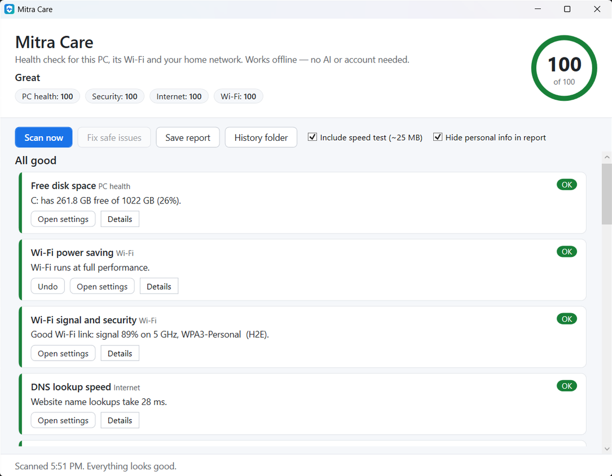

Mitra Care
A free health check for your family's Windows PC, its Wi-Fi and your home network. It finds problems, explains them in plain English, fixes them with one click and checks again. It works offline: no AI, no account.
Version 0.2.0 (beta) · Windows 10 and 11, 64-bit · 73 MB · nothing to install, just run it · signed by Rajesh Katukojwala. Because the signature is new, Windows may show “Windows protected your PC” the first time: choose More info, then Run anyway.

What it checks
- PC health: free disk space, disk health, Windows updates, and whether a restart is waiting.
- Security: firewall, virus protection and its definitions, old file sharing (SMBv1), Remote Desktop, the “allow changes?” prompt (UAC), the Guest account, accounts without a password and drive encryption.
- Internet: delay and dropped connections, download speed, and how fast website names are looked up (DNS).
- Wi-Fi: signal strength and Wi-Fi security, power saving that slows Wi-Fi, saved password-free networks that join on their own, and how often the Wi-Fi drops.
Each result gets a score out of 100, a short “why it matters” and steps to fix it yourself. Router settings (channel, WPA3, firmware) get clear step-by-step guides, because every router is different.
Your home network
- Every device, on a map. See what is connected: TVs, phones, printers, cameras, smart plugs, mesh points. Mitra Care works out what each one is and says why it thinks so. Give devices family names like “Dad's phone”.
- New and unknown devices stand out, so you notice when something joins that nobody recognises. Devices with old, unsafe remote access open (Telnet or FTP) are flagged as a risk.
- Is it the Wi-Fi or the internet company? It measures both sides and tells you which one is slow. It also spots two routers in a row (“double NAT”), a common cause of game and video-call trouble.
- Warnings if someone tampers with your network: if the router is swapped or impersonated, this PC's internet address book (DNS) is changed, or network addresses are handed out by something other than your router, you get a clear warning with what to do. A warning stays until you press “This is expected”.
- Weekly check (optional). Mitra Care can check every Sunday at 7 PM and show a Windows notification about new devices or warnings. It runs without administrator rights and never changes anything.
How it finds devices: only by looking at your own home network from this PC. It pings the addresses in your network, reads the PC's list of nearby devices, listens for devices that announce themselves (UPnP and Bonjour) and checks a few well-known ports. The device maker is looked up in a list built into the app, so nothing is sent online.
How fixing works
- You see the change first. Bigger changes show exactly what will change and ask before doing it.
- A safety net. The first fix makes a Windows restore point, and every fix saves the old setting before changing anything.
- Checked again. After each fix the check runs again, so you know it worked.
- Undo. Fixes can be undone with one click, even after closing the app.
- Never the risky stuff. It never turns protection off, never deletes your files and never “cleans” the registry.
A report to share
Save a one-page report to send to the family member who helps with computers, with the health check and the home network map. Names, network names and addresses are hidden by default.
Good to know
- It asks for administrator rights when it starts, because fixes change system settings. You can say No and still run the checks that don't need them.
- Everything stays on your PC. The home network scan only talks to devices in your own home. The only things that go online are the optional speed test (Cloudflare) and a few pings to measure the internet delay.
- This is a beta. Wi-Fi checks read English Windows; on other languages some may show “Skipped”.
- Mitra Care is free. Its source code is not published yet.
- A command-line version for helpers is on the release page.